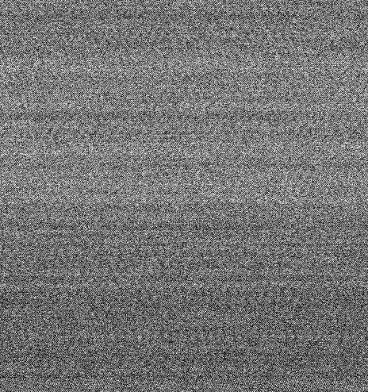

Review queue
1 of 8 assigned to you
Images: nf-core/test-datasets@imcyto, IDR idr0076, idr0054 (OME-TIFF, OME-Zarr) · ROI metrics computed from the source files
J / K
ROI QC · tme-imc-04 · #377
SEGMENTATION (stage 2 of 3) · gate and stage 3 (publish to depictio) from the lab overlay · waiting 1 h 12 min
ROIs · 3
item = ROI · keep · exclude · redo segmentation · worst first
ROIDNA · Ir191 / Ir193Background · ArAr80Cells per mm²Hot pixels / spilloverDecision
SHOWN
{{c.t}}{{c.m}}
BACKGROUND CHECK · ArAr80
row-to-row drift 2.9 % (max 5 %)
Faint line pattern, no tissue structure: background only, passes. HOT PIXELS CD45-162Dy 220 isolated pixels · Pb208 226 (not a marker) · DNA1-191Ir 1 /data/demo/idr0076/10501752.zarr · streamed by the runner on demo-hpc

Mean 6,291 countsrow-to-row drift 2.9 % (max 5 %)
Faint line pattern, no tissue structure: background only, passes. HOT PIXELS CD45-162Dy 220 isolated pixels · Pb208 226 (not a marker) · DNA1-191Ir 1 /data/demo/idr0076/10501752.zarr · streamed by the runner on demo-hpc
Channels · 50
10501752 · pick up to 6{{p.m}}
Gate checks
lab overlay · imcyto declares no gate and writes no QC table
{{c.name}} · {{c.rule}}
{{c.value}}
{{c.where}}
Run health
built in{{h.k}}{{h.v}}
AI
QC agent suggests redoing the segmentation of ROI_1 with 191Ir added to the ilastik stack (its DNA signal is weak in 193Ir alone), excluding 5025551 (8-bit export, DNA clipped at 255) and keeping 10501752.
metadata.csv · v1 → v2 · 1 change · columns
The test metadata.csv lists 21 metals; ROI_1's OME-TIFF has 20 channels (no 104Ru).
metal, full_stack, ilastik_stack
| metal | full_stack | ilastik_stack | note |
|---|---|---|---|
| {{r.m}} | {{r.f}} | {{r.old}} {{r.i}} | {{r.n}} |
{{h.t}}{{h.text}}{{h.at}}
PENDING CHANGES · 3
{{c.t}}
metadata.csv is run-wide. Editing it reruns ILASTIK and SEGMENTATION for every ROI. Chosen: a linked child run for ROI_1 only.